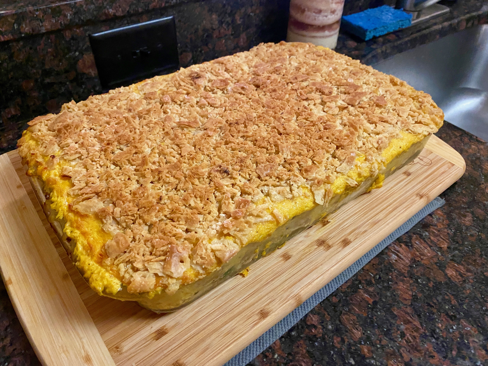

Home

Oven-fresh Chicken Divan
Chicken Divan has been a southern favorite for generations.
It was originally made for French royalty and named "Chicken Divine".
Brought over to the united states by servant cooks looking to make a new life,
Chicken Divan has changed from a fancy-dancy chicken in cheese sauce to a more
traditional southern casserole.
This divine-turned-country-favorite dish is much easier to come by now
and can be found as the centerpiece for any family dinner. So round
up your family and have a nice sit-down around this hearty meal.
Ingredients
Cheese Mixture:
- 1 Large block (24 oz) of mild cheddar cheese, shredded
- 1 Container (32 oz) of plain greek yogurt
- 2 Cans cream of chicken soup
- 2 Tbs Curry
- 1 Lime
Meat:
- 4 Large chicken breasts
- 2 Tbs butter
- 1 Garlic clove
- 4 Tps Salt
Vegetables:
- 1 Large head of broccoli
Crispy Topping:
- 1 Sleeve of Zesta saltine crackers
- 1 Stick (4 oz) of butter
Directions
- Heat a cast-iron skillet on the stove adding the butter and bringing it to the "browned butter" state.
Add the chicken and sear both sides.
Crush the garlic clove and add to the butter in the skillet. Cover and
let cook until chicken is done.
- Let the chicken rest 10-15 minutes then pull it apart by hand. You may use forks if desired. Make each pulled chunk small enough to fit in one bite.
- In a large mixing bowl, add greek yogurt, cream of chicken soup, and curry powder. Mix thoroughly. Squeeze in lime juice and fold in shredded cheddar cheese.
- Preheat oven to 350 degrees F.
- Chop florets of broccoli from the head of broccoli and lay them in the bottom of a 9x13 casserole dish. Split larger heads for a more even layer.
- Add an even layer of chicken over the broccoli. You should have enough to almost cover the broccoli completely.
- Spread cheese mixture over the chicken. Try not to go higher than the sides of the dish.
- Crush the crackers into crumbs. Melt butter in a medium mixing bowl. Add cracker crumbs to butter and mix.
- Spread Cracker crumbs over the top of the cheese mixture. Cover with foil and put in the oven.
- Let the Chicken Divan cook for 25-30 minutes covered then increase oven temp to 400 degrees F and remove foil. Let crisp for 10 more minutes or until golden brown.
- Serve with rice, beans, or just by itself. It is a rich dish so some starch or freshness is a welcome accompaniment.
Home
Return to top